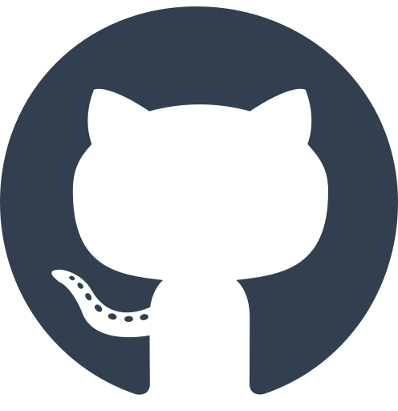

Matteo Rinaldi
Curriculum Vitae
GITHUB PROJECTS

MatteoR1994
Respository aperti durante i corsi
I respository in linguaggio Kotlin sono stati creati durante il corso "Sviluppo mobile app con Android". Alcuni sono nati per fare esercizio sul linguaggio, mentre altri sono dedicati ai progetti Android sviluppati durante il corso sia per fare semplici applicazioni (piccoli giochini, molto semplici, prova degli Intent, inserimento dei dati da input utente, etc.), sia per sviluppare un'applicazione di prova (progettata e sviluppata con il docente) per testare i servizi REST. Abbiamo sviluppato un piccolo beck-end utilizzando IntelliJ IDEA e un'applicazione Android come client per modificare i dati. I respository in linguaggio HTML / CSS / Javascript, invece, sono dedicati al corso "Sviluppatore Fron-End". Quelli in puro HTML e CSS sono nati per allenarsi a creare siti web statici, imparando il corretto posizionamento dei vari elementi e il loro stile grafico (grid, flex, colori, stili dei font, margini, link, menu e via dicendo). Quelli, invece, in Javascript sono divisi in respository contenti codice puro da testare via console per imparare i fondamenti del linguaggio e per fare i relativi esercizi. Una volta presa un po' di dimestichezza con il linguaggio siamo passati a combinare i tre linguaggi per creare semplici siti dinamici con elementi generati e riempiti dinamicamente con il Javascript (per esempio un sito configurabile, o un trivia basato sull'API gratuita di opentrivia), oppure piccole applicazioni web per generare le statistiche di una stringa, per testare i Web Workers (per citarne alcuni).Progetti personali
Al momento ho in elenco almeno tre progetti personali da sviluppare:- Il classico gioco Hangman (non è ancora presente il respository corrispondente sul mio account, ma ho gia' iniziato a svilupparlo sul mio computer)
- Il classico gioco Pong, iniziato come esercizio sulla Canvas:
- Un catalogo virtuale della mia libreria e dei miei oggetti da collezione (non ho ancora finito di svilupparlo)